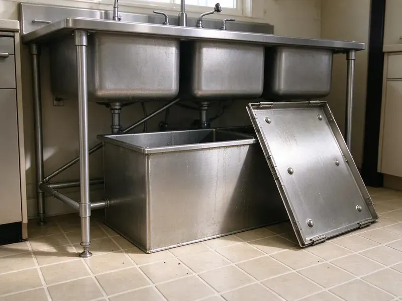

Grease Trap Repair in Cody, WY
JKV Plumbing handles grease trap repair in Cody, WY, from small indoor units to buried concrete interceptors.
- Same-Day Commercial Service
- Licensed Commercial Plumbers
- After-Hours Service
- Work Guaranteed

Fast Grease Trap Repair in Cody, WY
We pump, inspect and repair the trap, and test it with water before we go.
Grease Trap Repairs That Pass Inspection in Cody, WY
JKV Plumbing repairs grease traps and interceptors for kitchens across Cody, WY, from a 20-gallon unit under a bar sink to a 1,500-gallon concrete tank under the parking lot. Most failures come down to a few parts. Baffles, tees, lids and gaskets wear out, and flow control fittings go missing. We find which one and fix it.
Work we handle every week:
- Repair lids, gaskets and riser joints
- Repair or replace damaged interceptor baffles
- Clean or replace flow control fittings

Additional Kitchen Plumbing Services in Cody, WY
Our kitchen plumbing services in Cody, WY cover sinks, disposals, dishwashers, and grease traps so your kitchen stays clean, safe, and fully functional.


Customers
Why Choose JKV Plumbing for Grease Trap Repair in Cody, WY?
Every repair ends with a flow test. We fill the sinks, pull the plugs and watch what comes out the other side. If grease shows up downstream or the level behaves wrong, the job is not finished, and we keep working until the trap holds its grease cap and passes clear water out the outlet. After that, you get a written record.
- Quality Parts, Manufacturer parts or commercial-grade materials rated for grease and heat.
- Specialized Tools, Jetters and sewer cameras let us see the problem and clear it instead of guessing.
- Accurate Diagnosis, We pump and inspect before quoting, so we know exactly what failed.
Citywide Coverage
Suburban homes with an under-sink trap get the same service as a busy restaurant in the middle of Cody. Residential calls are rare but welcome. The plumber brings the right gasket kit and a small jetter for kitchen lines, since a house line is usually 1-1/2 or 2 inch pipe rather than the 4 inch line a restaurant runs. Plan on less than an hour at most homes.
Experienced Team
Diagnosing a grease trap is mostly about knowing what normal looks like. In a working trap, grease floats in a layer on top and the middle stays fairly clear. Our techs measure both layers, compare them to the last pumping date, and can tell from that whether the trap is separating or just passing grease along to the sewer. The numbers tell the story.
Safety-First Approach
Health codes treat a grease backup as a sanitation problem, not just plumbing. We keep waste contained the whole time. Tools and boots that touched the trap do not cross into food prep areas without being cleaned, and we wipe down every surface near the trap before the kitchen staff steps back in. Nothing should be left for an inspector to note.
Trusted Certified Cody Plumbing Services Professionals
At JKV Plumbing, we are proud to offer certified plumbing services throughout Cody, WY. Those papers on the wall mean something. Our plumbers hold recognized industry credentials, and they follow strict safety and quality rules on every repair, installation and maintenance call we run.
Call Us Now PHCC Plumbing Contractor Recognition
PHCC Plumbing Contractor Recognition Better Business Bureau (BBB) Accreditation
Better Business Bureau (BBB) Accreditation Angi Certified Pro
Angi Certified Pro ISO 9001 Quality Management Certification
ISO 9001 Quality Management CertificationGrease Trap and Interceptor Repair in Cody, WY
Damaged Baffle Repair in Cody
Baffles are the walls inside the trap that slow the water down long enough for grease to float and solids to sink. A cracked or loose baffle turns the trap into a pass-through. We pump it out and pull the old baffle. On plastic units we order the factory part for that model number. Steel traps with a rusted-out baffle may need a fabricated piece, and sometimes a new trap is the cheaper answer.

Leaking Grease Trap Repair in Cody, WY
A wet floor around an under-sink trap usually points to a failed lid gasket or a loose inlet coupling. Older steel bodies rust out along the bottom seams, too. We dry the area, fill the trap and watch where the water shows up. Some days the fix is a cheap gasket and ten minutes. An opened seam is another story, and we will say up front if a patch will not hold.
Commercial Grease Trap Repair in Cody
Restaurants, school cafeterias, hospital kitchens and bakeries all push more grease than a small trap can hold. We see undersized traps fail in the same few places every time. The inlet tee clogs, the outlet tee gets coated, and grease starts showing up in the sewer manhole down the street, which is usually how the city finds out before the owner does. We fix the failed parts and tell you plainly if the trap is too small for the kitchen.
Commercial Grease Interceptor Repair in Cody, WY
In-ground gravity interceptors run from about 500 gallons to several thousand, usually precast concrete with two compartments. Hydrogen sulfide from the waste eats the concrete above the waterline over time. We pump the tank, inspect the walls and the crossover, and repair spalled concrete with a cementitious patch or an epoxy liner rated for that service. Entry follows confined space rules.
Inlet and Outlet Tee Repair in Cody, WY
Tees are cheap parts with an outsized job. On the inlet side, the tee directs incoming water down under the floating grease. The outlet tee draws water from low in the tank, well under the grease cap, so if it breaks off or someone removes it during pumping, floating grease walks right out to the sewer. New tees go in as Schedule 40 PVC, cut to the drop length the manufacturer or local code specifies.
Hydro-Jetting for Grease Trap Repair in Cody
A cable machine punches a hole through grease. A jetter scrubs the whole pipe wall instead. We run a commercial jetter at 3,000 to 4,000 PSI through the line feeding the trap and the line leaving it, working from the cleanout toward the main. With old cast iron, we turn the pressure down and keep a camera on it, since a thin wall can blow out.
Grease Line Clog Repair in Cody, WY
Lines downstream of the trap should stay clean if the trap is working. Grease past the outlet is a red flag. We jet the downstream run to the property line or the sewer tap, then camera it to confirm the pipe is clear and to document any cracked or sagging sections for a repair quote. Clearing the pipe without fixing the trap just resets the clock.

Emergency Grease Trap Services in Cody, WY
Friday night, full dining room, and the floor drain by the dish station starts gurgling up gray water. That is the call we answer after hours. The truck carries a pump, a jetter, spare gaskets and tees, so most emergency visits end with the trap working again before close. If the right part is not on the truck, we get you running safely tonight and come back for the permanent repair.
Local Grease Trap Repair Near Me in Cody, WY
Proximity cuts the cost of a shutdown more than anything else we do. Every hour your kitchen sits closed on a busy night costs you covers and wages. We schedule commercial repair crews so someone is free for emergencies, and they arrive with the parts that fail most often on the brands we see around Cody. That usually means one trip.
Nearby crews matter most when the trap is outside under the parking lot. Interceptor work needs a vacuum truck and room to park it. We line up the pump truck and the repair crew for the same morning, so the lot is open again before the lunch rush starts. Off-hours scheduling is available.
JKV Plumbing at a Glance
- Fully licensed plumbing team covering Cody, WY
- Same-day appointments and 24/7 emergency response
- Upfront, flat-rate pricing before work begins
- 4.9-star rated by 782+ Wyoming customers
Cody Map
Cody Information
- Population
- 10,240
- Area codes
- Local
- Service area
- Cody and towns within a 40 mile drive
- Nearby
- Powell, Sheridan, Riverton, Jackson
Settling ground and heavy traffic stress buried interceptors, risers and lid seals, so fixing them early keeps commercial kitchens in Cody, WY compliant and odor free. Basements and crawlspaces are both common in Wyoming homes, and both need protection from freezing and groundwater.
Talk to a Plumber
Reach out to JKV Plumbing for honest, reliable plumbing from people who know the trade in Cody, WY.
Our Specialized Plumbing Services in Cody, WY
At JKV Plumbing, we handle the full list of plumbing services across Cody, WY. We go from leak detection all the way to full system installations, for homes and commercial buildings, and we do it quickly at a fair price. Here are the core services we offer:


Our Grease Trap Repair Process in Cody, WY
We plan repairs around your hours to keep the kitchen running in Cody.
Schedule Service
Call (307) 393-4049 or use our online form to book a visit. We ask a few questions so the right parts are on the truck.
Diagnosis & Inspection
Our licensed plumber inspects the trap and connected piping. The goal is the real cause, not the symptom.
Repair and Explain
We walk through the options and give you an upfront estimate. After approval, we repair the trap with parts made for the job.
Frequently Asked Questions About Grease Trap Repair in Cody
Gaskets, tees and flow control fittings typically cost $200 to $800 installed. A rebuilt baffle wall or a new riser can reach $1,000 to $3,000 and up. The written estimate comes before any work, and it lists the parts, the labor and anything like pumping or jetting that adds to the total, so the bill matches what you approved. The final invoice matches the quote.
Broken tees, worn gaskets and cracked lids are routine repairs. A cracked tank body or a rusted-through steel unit usually needs replacing.
Most indoor repairs, like clearing a blocked inlet or replacing a baffle, take two to four hours including the pump-out. A leaking tank or a section of new pipe can stretch it to a full day.
We can, though off hours are usually better so the kitchen is not working around us. Emergencies get handled as soon as we can get there.
Gasket and clog work almost never needs one. Structural repairs or a change to the piping layout can. We check with the Cody building department before major work and tell you up front if a permit and inspection will be part of the job. Any permit fee shows up as its own line.
Grease that escapes a broken trap hardens in the public sewer and causes sanitary sewer overflows. Those overflows can reach storm drains and creeks. That is why pretreatment programs in Wyoming and elsewhere sample manholes for grease and fine the kitchens that keep discharging it. Repairs keep your kitchen out of that chain.
Scrape plates into the trash, put strainers in every floor sink, and keep the fryer oil out of the drains entirely. Have it pumped before the grease and solids fill 25 percent of the liquid depth. For most busy kitchens that works out to every one to three months, and JKV Plumbing can set a schedule from what we measure. Write down each pump-out date.
It can. Grease in the sewer or a failed inspection often brings a violation notice or a fine.
What People Are Saying About Our Plumbing Experts?

Laura S.
Our 40 gallon tank started leaking from the bottom after thirteen years. The tech hauled the old one out, set a new unit with a fresh expansion tank, and had hot water running in about four hours. He took the old tank with him too.
Water Heater Replacement · Powell, WYJessica T.
We were adding a gas range in a kitchen remodel and needed a new line run from the meter. The plumber pulled the permit, ran the pipe through the crawl space, and had it inspected and approved within the week.
Gas Line Repair · Jackson, WY
Carlos V.
Our house still had galvanized pipe, and upstairs the shower was a trickle. The crew repiped everything in PEX over three days and patched every drywall hole before they left. The pressure difference is night and day.
Repiping · Riverton, WYTyler J.
We bought a taller comfort height toilet for my dad, who just had knee surgery. The plumber pulled the old one, found the flange was cracked, and replaced it before setting the new bowl. Took about two hours.
Toilet Installation · Jackson, WYSofia M.
Two new toilets went in during one visit. The tech set them on new wax rings and swapped the old supply lines. He also noticed our bathroom faucet dripping and replaced the cartridge while he was there. No mess left behind.
Toilet Installation · Gillette, WY
Brian W.
I smelled gas behind the dryer and called right away. The plumber found a corroded flex connector, replaced it, and pressure tested the whole line before turning the gas back on. He let me watch the gauge hold steady for fifteen minutes.
Gas Line Repair · Powell, WY